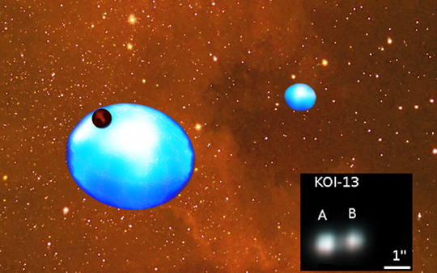
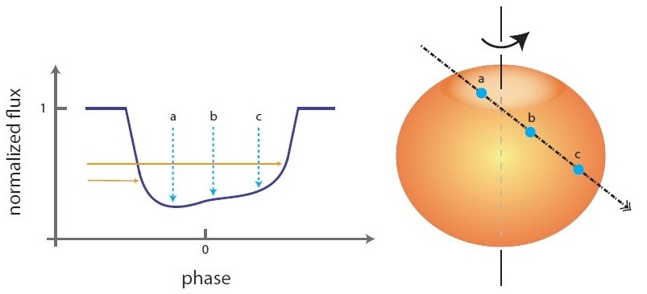
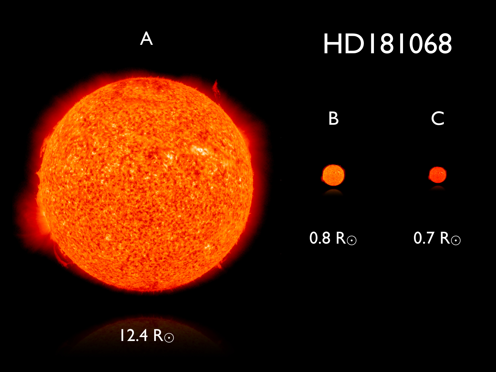
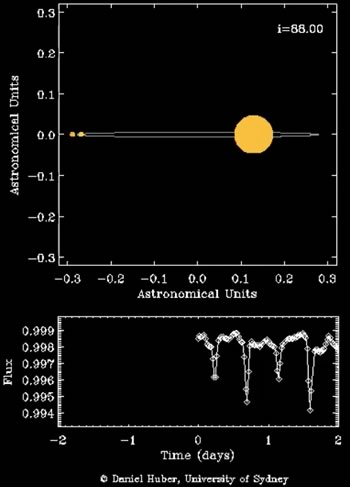
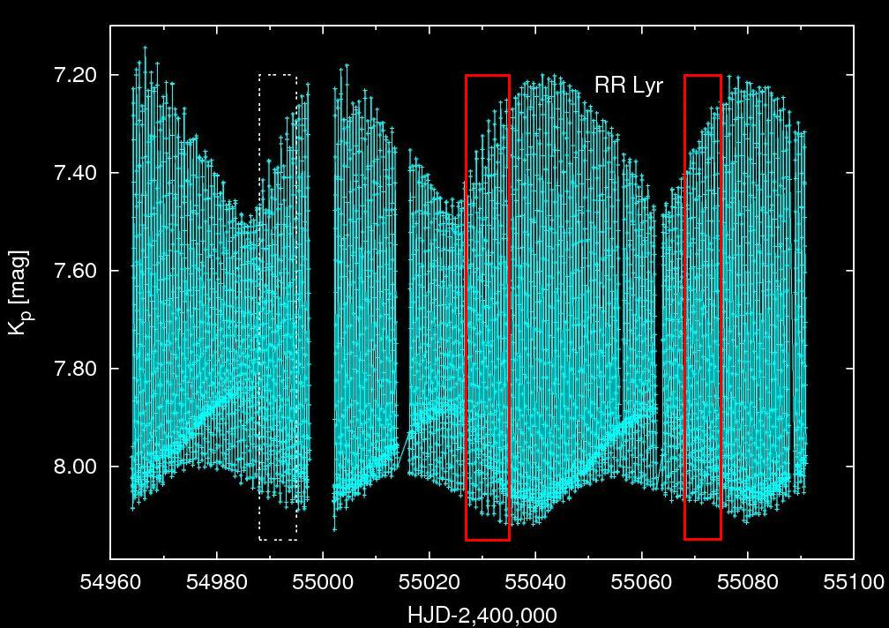
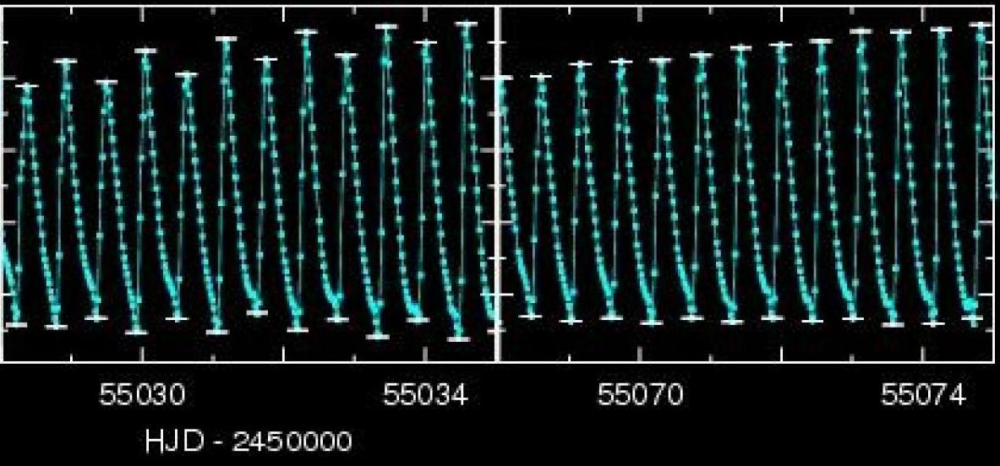
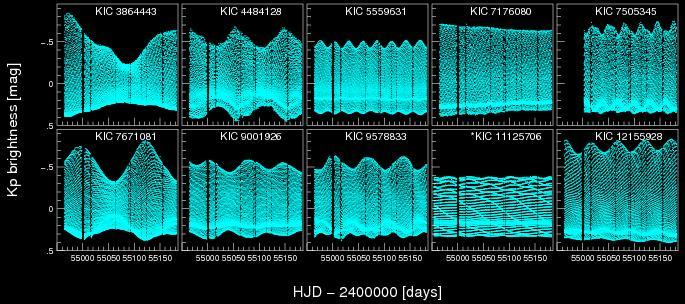
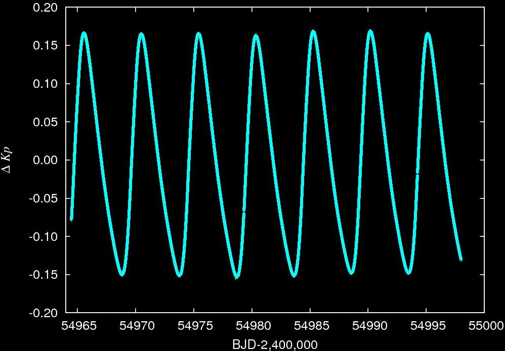

KIK research with Kepler
Jump to
- Rapidly rotating star with a strange companion
- Discovery of a triply eclipsing triple stellar system
- Discovery of period doubling in RR Lyrae stars
- Hydrodynamical modeling of period doubling
- Blazhko zoo of Kepler RR Lyrae stars
- Kepler field Cepheids
Rapidly rotating star with a strange companion

An artist's concept of KOI-13. A brown dwarf orbits one of the gravitationally
bound rapidly rotating subgiant stars.
Rapidly rotating stars have an oblate shape and their pole is hotter than their equator.
Planets or substellar objects with an oblique orbit transiting such stars would exhibit characteristic
light curve deformations. We identified the first such object in the public Kepler data.
KOI-13 consists of two stars, both being more massive than our Sun, and we showed that the
transit belongs to the brighter component. The object with the inclined orbit that causes the
transit is a brown dwarf, being a borderline object between planets and stars. The system is unique
by all means: we haven't seen a companion around such a hot star yet, in addition it is by all
likelihood a hot brown dwarf - an object never seen before. It is the first time that the obliqueness
of the small component's orbit relative to the rotational axis of the main component could be measured
using only the precise photometric measurements. This quantity is a tracer of the planet formation
and migration processes. The unique triple configuration also carries information on the validity of
stellar formation theories of low and medium mass stars.
Szabó M. Gy. et al. 2011, ApJ, 736, L4

Deformations in the light curve of a substellar object transiting a
rapidly rotating star.
Discovery of a triply eclipsing triple stellar system
We have discovered a unique triplet of stars, HD 181068 (magnitude of 7.1) in the Kepler data, which we
dubbed 'Trinity'. We obtained 218 days of Kepler photometry supplemented by ground-based
spectroscopy and interferometry, which show it to be a hierarchical triple with two types of mutual
eclipses. The primary is a red giant that is in a 45-day orbit with a pair of red dwarfs in a close
0.9-day orbit. The red giant shows evidence for tidally induced oscillations that are driven by the
orbital motion of the close pair. Hierarchical triple systems comprise a close binary and a more
distant component. They are important for testing theories of star formation and of stellar evolution
in the presence of nearby companions. HD 181068 is an ideal target for studies of dynamical evolution and
testing tidal friction theories in hierarchical triple systems. See also the
press release.
Derekas et al. 2011, Science, 332, 216

The three components of HD 181068 drawn to scale. The radius of the red giant
star (A) is 12.4 times larger than the solar radius, while the B and C components are dwarf stars, each
smaller than our Sun.
Credit: D. Huber (Univ. of Sydney)

Animation of HD 181068 system and light curve.
Click on image to play animation.
D. Huber (Univ. of Sydney)
Discovery of period doubling in RR Lyrae stars
One of our most recent achievements is the discovery of period
doubling in Kepler RR Lyrae stars, one of them is RR Lyr itself, the eponym and
prototype of its class. This is the first time that this dynamical phenomenon was observed in
RR Lyrae stars.
The period doubling manifests itself as alternating maxima and minima of the
pulsational cycles in the light curve, as well as through the appearance of half-integer
frequencies located halfway between the main pulsation period and its harmonics in the
frequency spectrum. Interestingly, all these pulsating stars are Blazhko modulated. The effect
was found to be stronger during certain phases of the modulation cycle. These findings point to
a strong connection between the period doubling and the mysterious Blazhko effect and we argue
that it may give us fresh insights to solve the century-old Blazhko enigma. These results were
discussed in detail at the
NASA-KASC press conference held at Aarhus, Denmark in 2010 October 26
(press
release).
Kolenberg et al. 2010, ApJL, 713, 198
Szabó et al. 2010, MNRAS, 409, 1244

Period doubling in RR Lyrae. 127-day long Kepler light curve
of RR Lyrae is shown. The individual pulsational cycles are hard to see, but the Blazhko-modulation
with a ~40-day period is evident. The period doubling is strongest at specific phases of the first
two modulation cycles, but during the third cycle period doubling is not seen. The two highlighted
red sections are blown up in the next figure.

Period doubling. Two sections of the Kepler light curve of RR
Lyr at the same phase of the Blazhko-modulation. In both cases the amplitude of the pulsation is
increasing because of the Blazhko modulation. However, in the left panel period doubling is striking,
while in the right panel it is not present. The cause of this discrepancy is currently unknown.
Hydrodynamical modeling of period doubling
The best thing was yet to come. We were able to reproduce the period doubling bifurcation in
our non-linear RR Lyrae models computed by the Florida-Budapest hydrocode. This enabled us to
trace the origin of this instability in RR Lyrae stars to
a 9:2 resonance between the fundamental pulsational mode and a high-order
(ninth) radial overtone showing strange mode characteristics. The resonance was found to
be surprisingly strong, yet these resonances were neglected in previous theoretical studies. Our
investigations suggest that a complex interplay of radial (and presumably non-radial) modes can
take place in RR Lyrae stars that might have connections with the Blazhko-effect as well.
Kolláth,
Molnár, Szabó 2011, MNRAS, in press
Blazhko zoo of Kepler RR Lyrae stars
We analyzed Kepler observations of 29 RR Lyrae stars. 14 of the stars exhibit
both amplitude and phase Blazhko modulations, with Blazhko periods ranging from 28 to
longer than 200 days. The unprecedented precision of the Kepler photometry has led to the
discovery of the the smallest modulations detected so far. Moreover, additional frequencies
beyond the well-known harmonics and Blazhko multiplets have been found. In four stars, these
frequencies are close to the first and/or second overtone modes. The amplitudes of these
periodicities seem to vary over the Blazhko cycle. V350 Lyr, a non-Blazhko star in our sample,
is the first example of a double-mode RR Lyrae star that pulsates in its fundamental and second
overtone modes.
Benkő et al.,
2010, MNRAS, 409, 1585

Blazhko RR Lyrae stars in the Kepler field. Great variety of light curve
modulation period, strength and shape is seen in this sample. However, the origin of the modulation is
still unknown.
Prior to the launch of the Kepler space telescope we selected 40 candidate
Cepheids from previous surveys and databases in the Kepler field of view. We
analyzed the first 322 days of Kepler photometry of these candidates, and
initiated ground-based follow-up spectroscopic and multicolour photometric campaigns.
These data together allowed us to confirm that one of these stars, V1154 Cyg, is indeed
a Cepheid with a period of 4.9 days. Using the phase lag method we showed that this star
pulsates in the fundamental mode. The new radial velocity data are consistent with
previous measurements, suggesting that a long-period binary component is unlikely. No
evidence is seen in the ultra-precise, nearly uninterrupted Kepler photometry
for nonradial or stochastically excited modes at the micromagnitude level. The other
candidates are not Cepheids but an interesting mix of possible spotted stars,
eclipsing systems, flare and other variable stars.
Szabó et al., 2011, MNRAS, 413, 2709

Light variation of V1154 Cygni. The only known Cepheid in the Kepler field was
observed with a 1-minute cadence for 33.5 days.